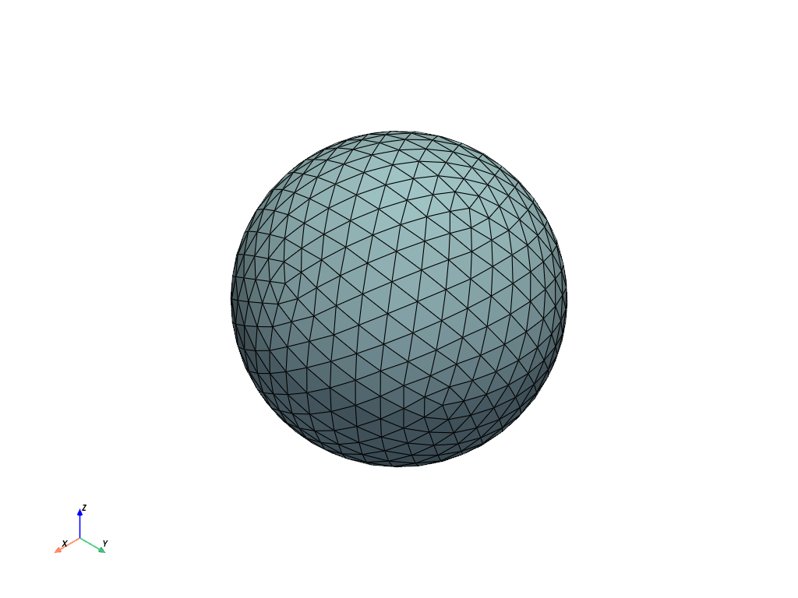
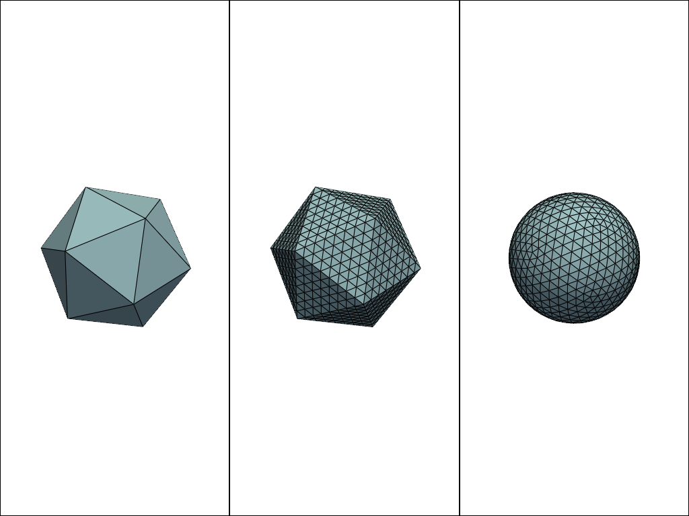
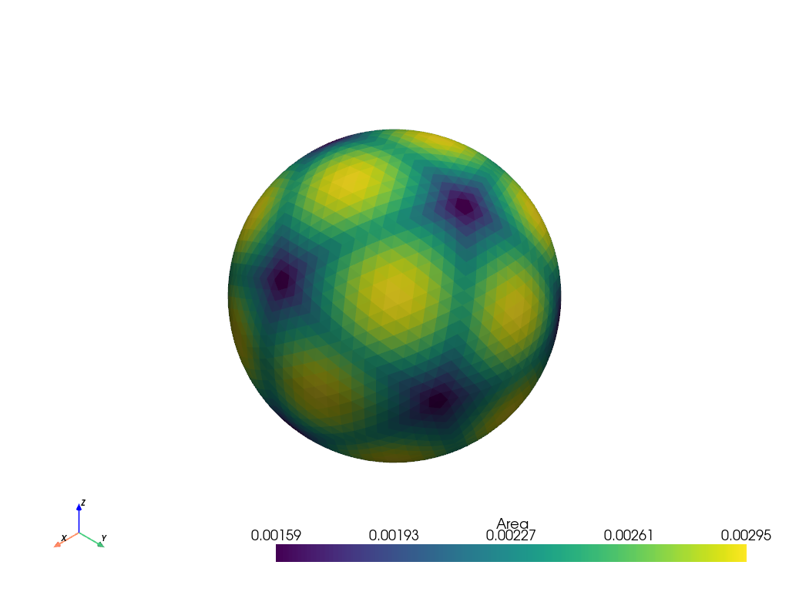

pyvista.Icosphere#
- Icosphere(radius=1.0, center=(0.0, 0.0, 0.0), nsub=3)[ソース]#
ICO球を作成します．
ICO球は geodesic polyhedron であり，三角形からなる凸多面体です．
測地線多面体は，より単純な多面体の面を細分化し，新しい頂点を球の表面に投影することで構成されます．測地線多面体は，球に近い直線的な辺と平らな面を持ちます．
- パラメータ:
- radius
float, default: 1.0 ICO球の半径．
- centersequence[
float], default: (0.0, 0.0, 0.0) ICO球の中心 ．
- nsub
int, default: 3 これは，元の
pyvista.Icosahedron()の各三角形を細分化した回数です．
- radius
- 戻り値:
pyvista.PolyDataICO球のメッシュです．
例
ICO球を作成し，エッジでプロットします．
>>> import pyvista as pv >>> icosphere = pv.Icosphere() >>> icosphere.plot(show_edges=True)
 このICO球がどのように作られたかを示します．
>>> import numpy as np >>> icosahedron = pv.Icosahedron() >>> icosahedron.clear_data() # remove extra scalars >>> icosahedron_sub = icosahedron.subdivide(nsub=3) >>> pl = pv.Plotter(shape=(1, 3)) >>> _ = pl.add_mesh(icosahedron, show_edges=True) >>> pl.subplot(0, 1) >>> _ = pl.add_mesh(icosahedron_sub, show_edges=True) >>> pl.subplot(0, 2) >>> _ = pl.add_mesh(icosphere, show_edges=True) >>> pl.show()
 三角形の面積が均一でないことを示します．これは，元の三角形の端から遠いものは，球体への移動距離が長いからです．
>>> icosphere = pv.Icosphere(nsub=4) >>> icosphere.compute_cell_sizes().plot(scalars='Area')
